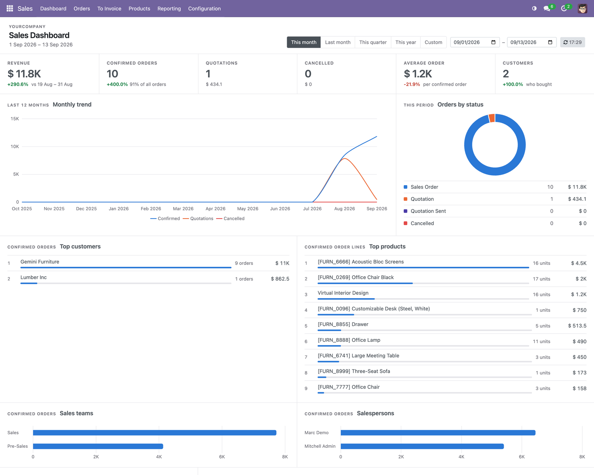
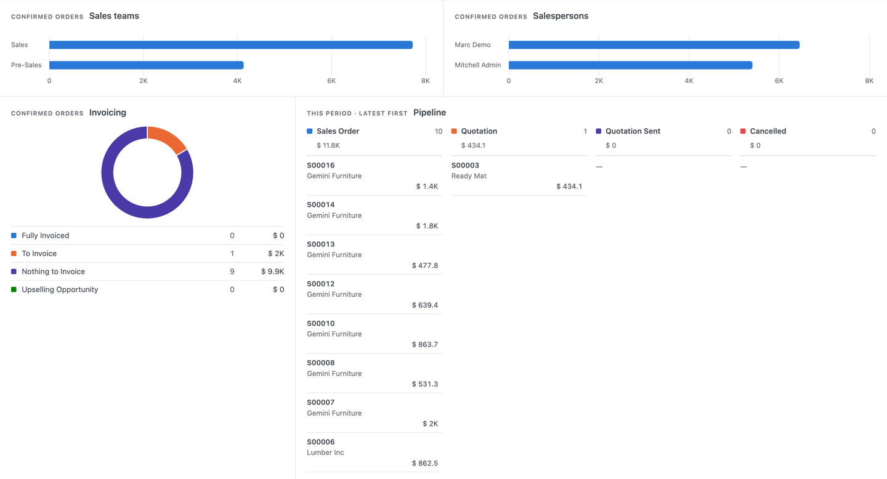
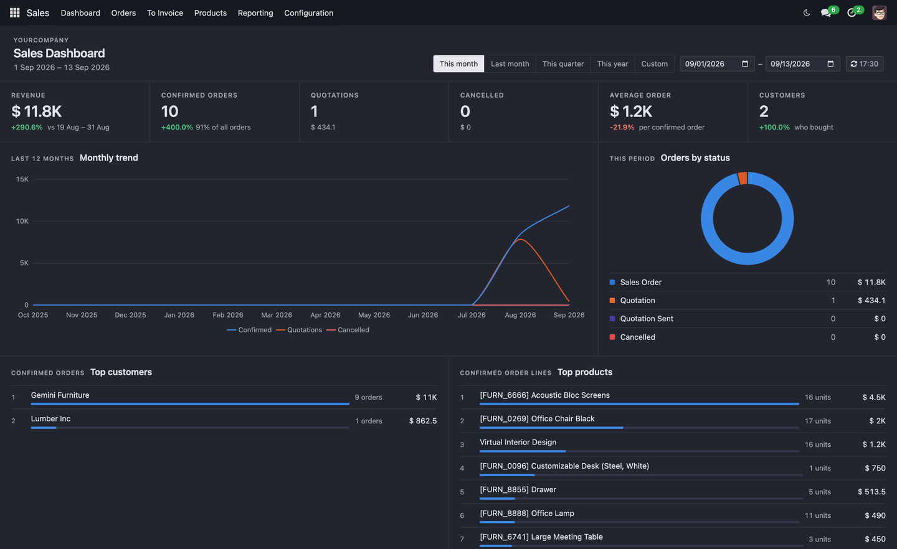

One page for the state of sales — read in a minute, every figure a link
The page to open in the morning. Revenue, orders, quotations, cancellations, average order and customers for the period — each beside the same figure for the previous period of the same length, so a number has something to be compared to. Below it: the twelve-month trend, orders by status, the top customers and products, teams and salespersons, invoicing, the pipeline, and what changed last. Click any of them and the orders behind it open, already filtered.

Set like a ledger, not a poster: hairlines instead of cards, figures in tabular numerals, one accent. This month, last month, this quarter, this year, or any two dates.
Headline figures, with contextRevenue, confirmed orders, quotations, cancellations, average order value and customers who bought — and next to each, how it moved against the previous period of the same length. |
Trend and statusTwelve months of confirmed, quoted and cancelled amounts on one axis. Orders by status and invoicing status as rings, with the counts and amounts written beside them. |
Who and whatTop customers and top products, ranked with their share drawn inline. Sales teams and salespersons as bars. The pipeline in four columns, latest first. The last orders touched, with status and invoicing. |


Follows the backend's theme. With a dark theme on, the page and the charts switch to colours chosen for a dark surface — not an automatic inversion.
One currencyEvery amount is in the company's currency. Orders placed in another currency are converted, so a company that sells in three currencies still gets one number, not three added together. |
Who sees whatThe Sales app's own groups decide. A salesperson with Own Documents Only sees their orders; everyone above sees the company's. Every link opens a list filtered the same way. |
Colours that hold upA status keeps its colour whatever is filtered. The palette was checked for colour-vision deficiency and for contrast in both themes, and every figure is also written out, so nothing is carried by colour alone. |
Built on Odoo Community modules only, so it runs on both editions. Available for
Odoo 17.0, 18.0 and 19.0. It depends on sale_management, adds no model
and no table, and draws with Odoo's own Chart.js bundle — nothing is fetched
from the internet.